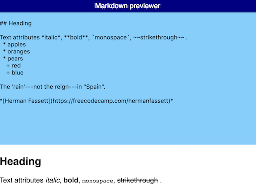

<div class="card-media">
    <a href="markdown-previewer/index.html">
        
    </a>
</div>
<div class="card-title">
    Markdown previewer
</div>
<div class="card-body">
    Simple React exercise using the marked library. Written with Babel/ES6 via the Facebooks
    create-react-app boilerplate.
</div>
<div class="card-footer">
    <a href="https://github.com/jw120/fcc-markdown-previewer">Source</a>
</div>
